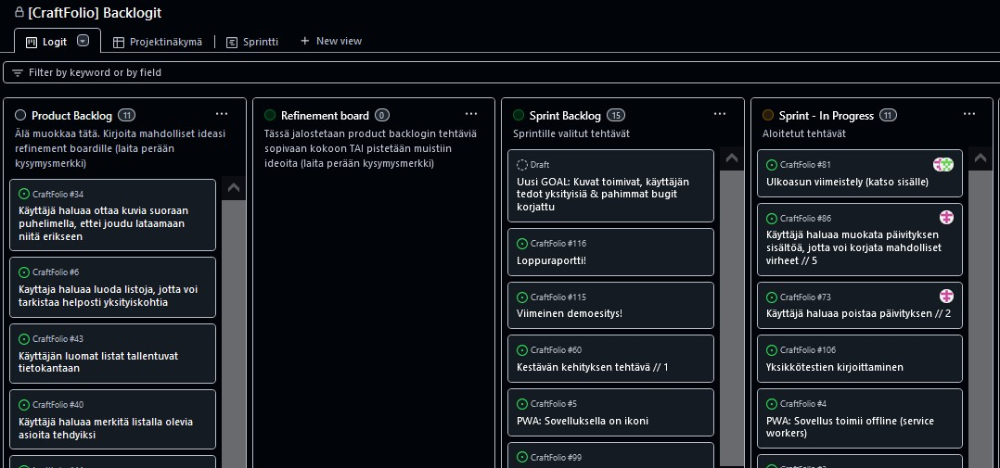

MP: Scrum
Ihan abstraktilla tasolla, kun kuulee Scrumin tyylisistä prosesseista,
ainakin itselleni on aika selvää miksi niitä käytetään.
Kuitenkin niiden hyödyllisyys (ja se miten ne oikeasti toimii) selviää
vasta käytössä.
Osaksi tästä syystä puhuimme ryhmässä paljon siitä, että Scrum prosessia voisi avata lisää kurssin alussa.
Scrum Masterina
Päädyin ryhmän Scrum Masteriksi, koska rooli kuulosti kiinnostavalta ja sivutehtävät jakautuivat siten järkevästi. En ollut aikaisemmin pitänyt monia palavereja, mutta se lähti sujumaan oikein hyvin ja saimme ryhmässä alusta asti aikaan hyvää keskustelua.
Seurasin melko tarkasti Scrum Guiden ohjeita, mikä toimi mielestäni oikein hyvin. Pidimme joka päivä Daily Scrumin (paitsi sprint planning-päivinä). Sprinttimme kestivät n. 2 viikkoa. Pidimme sprintin alussa Planning-session, jossa minä ja Product Owner päivitimme (tietenkin muun ryhmän kanssa) sprint backlogia. Sprintin lopuksi kävimme Lutakon kampuksen kirjastolla pitämässä sprint review'n ja retron, jotka pidimme aikalailla oppikirjan mukaan. Joka review'ssa otimme jonkin uuden tekniikan käyttöön. Review'n ja retron välissä pidimme taukoa suunnilleen 15 min. Pidin itse muistiinpanoja näistä miiteistä.
Päätimme projektin alkuvaiheessa demota omaa koodia toisillemme Sprint
Review'ssa. Sain idean yhdestä Scrum Master-meetistä ja se oli muiden
ryhmän jäsenten mielestä hyvä ajatus.
Vaikka puhuimme paljon omista tekemisistämme, oli helpompi ymmärtää
mitä muut olivat saaneet aikaan, kun käytimme hieman aikaa koodin
esittelyyn.
Toinen tekniikka, jota kokeilimme oli Story Points-tyylinen ajankäytön
arviointi. Testasimme sitä muutaman viikon ajan, mutta loppujen
lopuksi se ei ollut kaikkein paras pieneen projektiin. Olisi ehkä
tarvittu lisää kokemusta ajankäytön arvioinnista tai enemmän aikaa
ottaa selvää osuimmeko arvioissamme oikeaan.
Jos nyt ryhtyisin tekemään projektia uudestaan haluaisin ehkä kokeilla
arvioida ajankäyttöä ihan tuntimäärinä.
Backlogit
Käytimme Backlogeihin GitHub Projectsia. Tämä oli Ullriikan idea ja hänellä on parempi käsitys Projectsin käytöstä, joten en hirveästi kerro siitä tässä.
